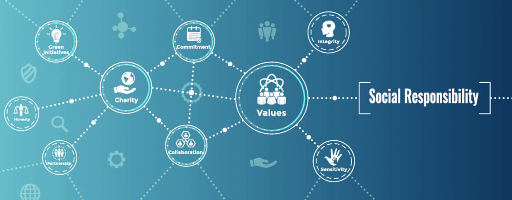
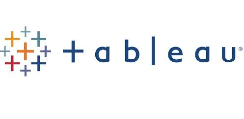

In this project, I utilized the Lown Hospital Index dataset. A ranking system that reveals the most socially responsible hospitals in the U.S. Rankings and grades are based on performances across health equity, values, and outcomes using a variety of metrics. Data exploration, validation, cleaning, and analysis were performed using SQL Server.

This project was a case study. This allowed me to apply the necessary steps within the data analysis process across the six phases. The dataset that was used was the Fitbit Fitness Tracker by Bellabeat, a wellness tech company of health products geared toward women. R Programming language was utilized for this project.

These are my Tableau Dashboard Visualizations. The ER project was part of an online data viz challenge in creating real-world business dashboards across a variety of industires and departments. I created an Emergency Room Dashboard using the RWFD dataset to identify wait times, satisfaction scores, and department referrals. The COVID project identified infections globally at a given time during the pandemic.